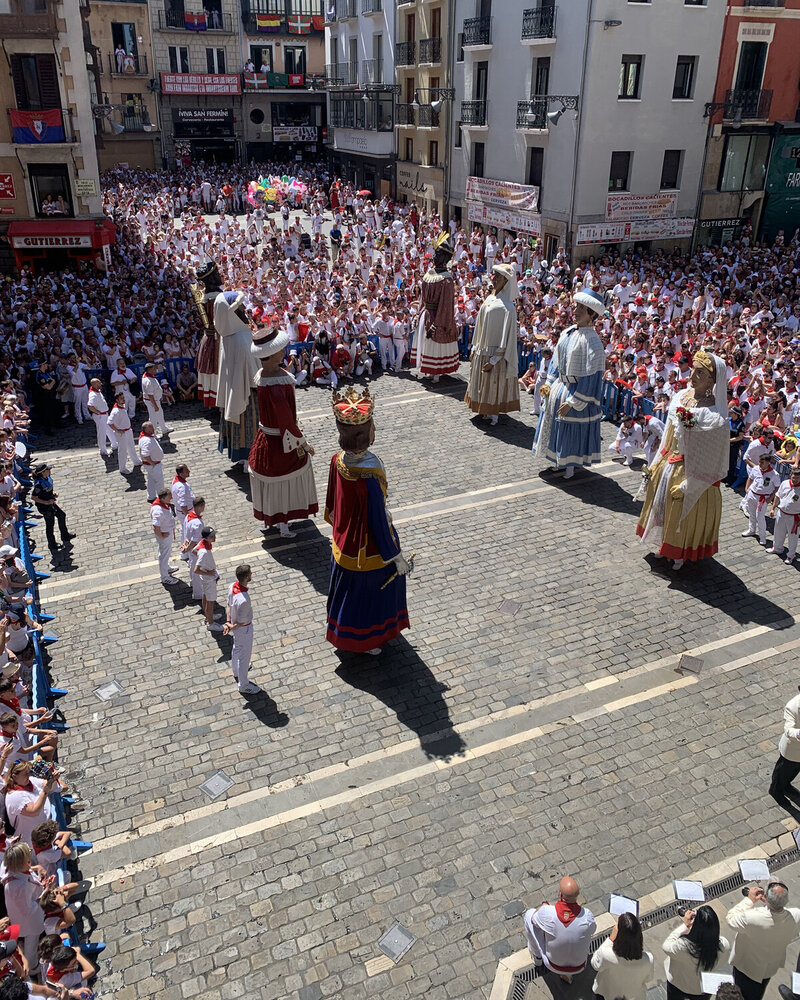
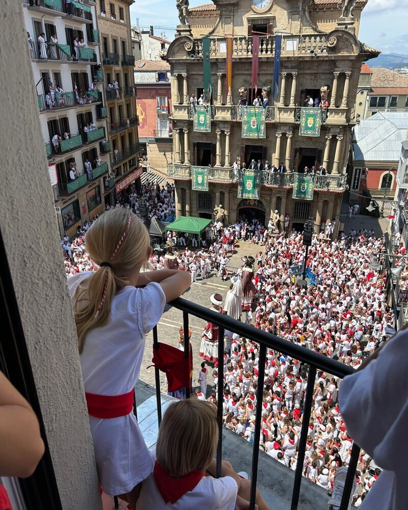
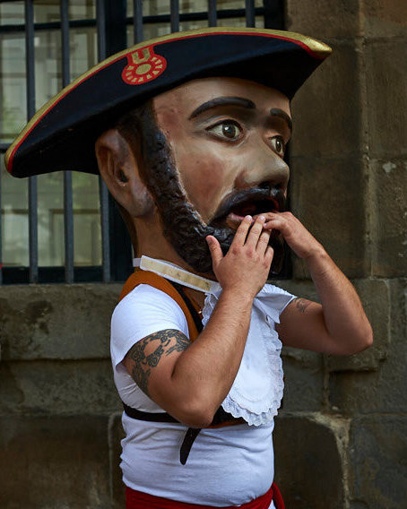
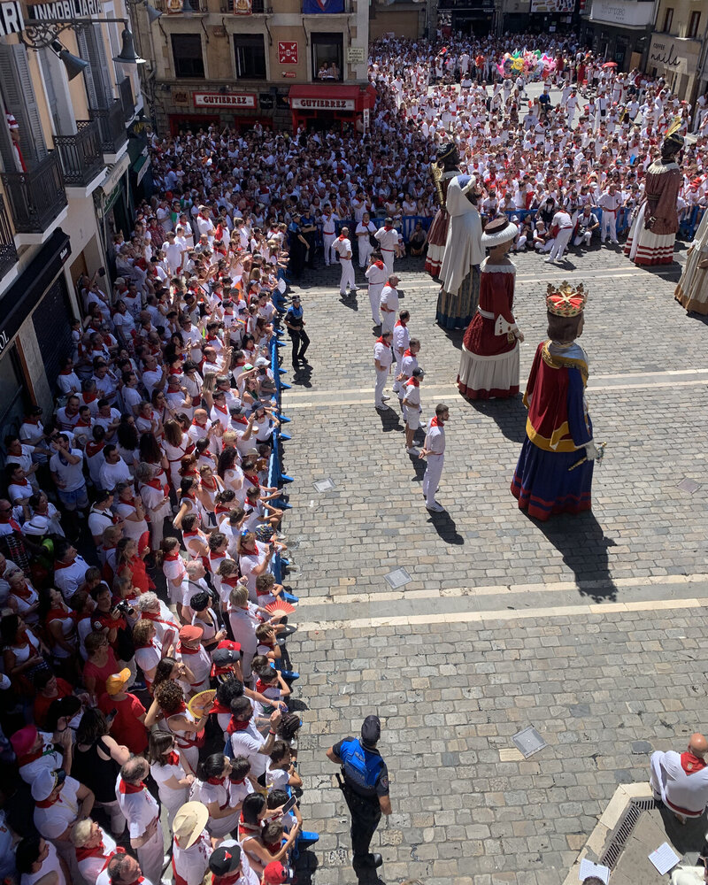
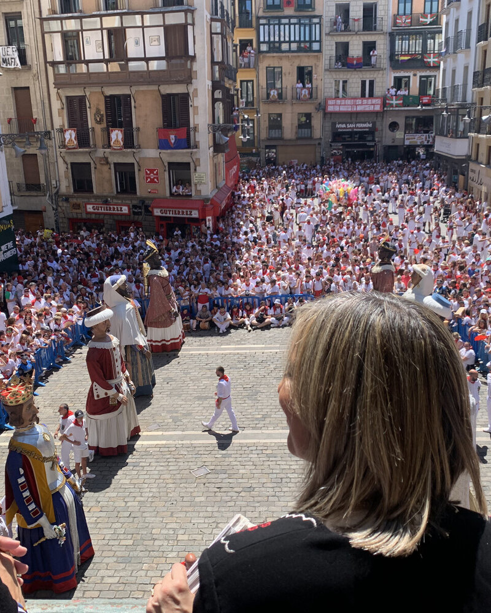
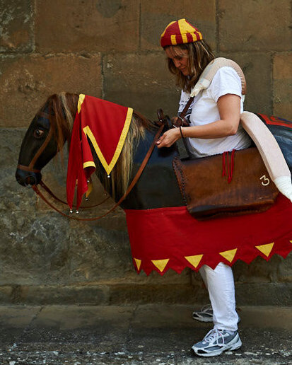

Qué hacer en San Fermín
Una guía completa con todos los planes, momentos y experiencias para vivir San Fermín de verdad.
Leer másLa Comparsa de Gigantes y Cabezudos es uno de los símbolos más queridos de San Fermín. Durante toda la fiesta recorren la ciudad, pero el día 14 de julio tiene lugar su despedida final en la Plaza del Ayuntamiento.
Se celebra la mañana del 14 de julio, normalmente hacia las 12:00, en la Plaza del Ayuntamiento de Pamplona. Es un momento muy especial, sobre todo para quienes han seguido la comparsa durante la semana.
A pesar de ser un evento más tranquilo que otros momentos de la fiesta, la plaza se llena con rapidez y la visibilidad desde la calle puede ser limitada. Encontrar un punto elevado y despejado marca completamente la experiencia.
Si quieres entender mejor cómo se organizan los distintos momentos de la fiesta, puedes ver esta guía sobre qué hacer en San Fermín.
Hay varias formas de vivir este momento:
La diferencia no está solo en lo que se ve, sino en cómo se vive el momento.
En nuestro caso, trabajamos principalmente con balcones en la Plaza del Ayuntamiento, porque es donde realmente se puede seguir la despedida con perspectiva. A partir de ahí, te proponemos opciones según el tipo de experiencia que buscas: más cercanía, más comodidad o una visión más abierta.
Todas las opciones parten de una misma idea: disfrutar de la despedida con perspectiva y tranquilidad. A partir de ahí, cambia el tipo de experiencia.









Las opciones varían según la ubicación y el tipo de acceso. De forma orientativa, los balcones para la despedida suelen situarse en rangos más accesibles que otros momentos de la fiesta, normalmente entre 60€ y 150€ por persona.
Más allá del precio, lo importante es la posición dentro de la plaza y la altura, ya que determinan completamente la visibilidad y la forma de vivir el momento.
Cuando nos escribes, te proponemos opciones concretas en función de lo que buscas, explicándote qué cambia en cada caso.
La despedida de los gigantes no se vive por intensidad, sino por significado. Desde un balcón, puedes seguir cada momento, cada baile y símbolo sin prisas, entendiendo lo que está pasando y por qué es importante.
No es solo una cuestión de altura, sino de perspectiva: ver cómo se despiden, cómo responde la gente y cómo cambia el ambiente en la plaza.
Nuestra propuesta consiste en seleccionar esos puntos y ayudarte a elegir el que mejor encaja contigo, para que el momento tenga sentido desde el principio.
Este es uno de esos momentos que forman parte de la memoria colectiva de Pamplona.
Nuestra forma de compartirlo es ofrecer una manera más tranquila y cuidada de vivirlo, sin perder lo que lo hace especial, desde una forma de trabajar que puedes ver en quiénes somos.
Cuéntanos cómo te gustaría vivir este momento y te proponemos opciones a medida.
No tiene nada que ver con estar abajo. Mucho mejor.
La despedida de los gigantes es uno de los momentos más emocionales del final de la fiesta. Ese mismo carácter más pausado también está presente en la Procesión de San Fermín, donde tradición y significado tienen un peso especial.
Y como cierre definitivo, la emoción se traslada al Pobre de mí, donde toda la ciudad se reúne para despedir la fiesta.
Porque cada momento tiene su forma de vivirse.
Algunas experiencias no terminan cuando acaba el evento. Para grupos, empresas o momentos especiales, podemos acompañarlo con piezas diseñadas específicamente para la ocasión.
Desde elementos sencillos hasta detalles más cuidados, todo se plantea como una extensión natural de la experiencia.
Porque a veces lo que se lleva puesto también forma parte de lo vivido.